Operating System
@Debuggers
Operating system :-
It is a callection of a programs that stablished the relationship between hardware adn user. Every computer system must have at least one operating system to run other programs. Applications like Browsers, MS Office, Notepad Games, etc., need some environment to run and perform its tasks.
The OS helps you to communicate with the computer without knowing how to speak the computer’s language. It is not possible for the user to use any computer or mobile device without having an operating system.
ex :- Apple macOS, Microsoft Windows, Google's Android OS, Linux Operating System, and Apple iOS etc..
Advantages of O.S :-
User Interface
Progeam execution
I/O opretion
File-System Manipulation
Comunication
Error Detection
Resourse allocations
Accounting
Protection & Secutity
high CPU utilization
increased throughout and efficient system use
Disadvantages of O.S :-
There were many disadvantages of batch operating System :
- Limited Interactivity: Batch systems lack real-time user interaction during job processing.
- Turnaround Time: Jobs in batch systems may have longer turnaround times, causing delays.
- Resource Utilization: Suboptimal use of resources may occur due to fixed resource allocations.
- Difficulty in Debugging: Identifying and fixing errors can be challenging, especially if they occur late in the batch.
- Job Prioritization: Lack of dynamic job prioritization may lead to inefficiencies in task execution.
Types of O.S :-
Uni-Programing
Opreting System only process to reside to in main memory . single process can not keep CPU & I/O devices busy simutanesuly . Uni-Programing means old O.S system only one program runs on the computer at a time . Either of the browser calculator or word processor runs at a time .
ex :- Bank Statment, Mobile phone etc...
 Multiprogramming System
Multiprogramming System
A multiprogramming system is one where many programs (application or user programs ) reside in the main memory at the same time. These application or users programs not only share the main memory but also CPU time and other system resources. Earliar these resides only a single program in memory and that single program was not able to make efficient use of systen in multiprogramming was developed so as to improve the CPU utilisation and make effiecient use of system. IN multiprogramming system, the memory is divided into several small portions. One portion of the memory holds the operating system and other portions of the memory holds different programs.
Time Sharing System / multi-tasking O.S
Both batch system and multiprogramming system worked in non-interactive environment, means the user of the system has no direct interaction with the system when the program is being executed. So there was a need for interactive computing environment so that user of the computer system can provide input with the help input devices and can see the output on the computer monitor. Time sharing system is the enhancement of multiprogramming system to provide this interactive user environment. TIme sharing is also multitasking system. In time sharing system two or more users are allowed to share the system. The users interact withe the system through their seperate monitor terminals. The user programs are stored in computer memory. The operating system assigns time interval called time-slice to each programs stored in memory associated with different users. The operating system uses CPU scheduling (CPU scheduling is decision making how to assign CPU time efficiently to different user programs stored in memory for execution) to switch the CPU time among different user programs.
 Real Time System
Real Time System
Real Time Systems are the systems designed to work in environment where processing is to be done within bounded time constraint otherwise there are several consequences and even system failure. Real-time systems are used in real-time applications or in embedded systems. Some examples of real time applications are : fire control system, nuclear plants control system, air defence system, industrial control system, nuclear plants control system, flight control system, modern automobile containing an embedded systems etc. Since real time systems are used to handle real time applications so the proper functioing of real time system is based on time bounded processing as well as correct result.
ex- AI Traffic controllers,VxWorks etc..
Multi-User
This OS allows multiple numbers of users can access different resoures of a computer at a same time . The access is provided using a network that consists of varios personal computers attache to a personal computers system . It helps in the sharing of data informaton among diffrente users .
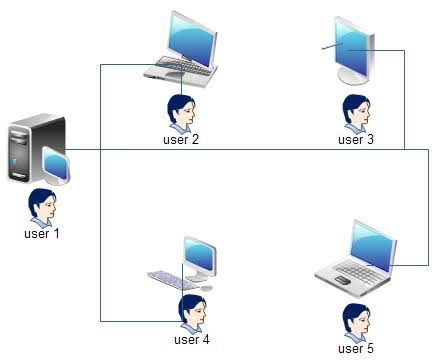
Multi-Processing
There is more than one proccessors present in the system which can execute more than one process at same time . Multiple CPUs are linked together so that a job can be divided and executed more quickly. When a job is completed, the results from all CPUs are compiled to provide the final output.
ex :- Symmetric , Asymmetrics

Process And Process States transition Diagram :-
Process => A process is a program in execution which then forms the basis of all computation. The process is not as same as program code but a lot more than it. A process is an 'active' entity as opposed to the program which is considered to be a 'passive' entity.
Process State transition Diagram :-

A process has several stages that it passes through from beginning to end. There must be a minimum of five states. Even though during execution, the process could be in one of these states, the names of the states are not standardized. Each process goes through several stages throughout its life cycle.
Process States in Operating System
The states of a process are as follows:
(Create): In this step, the process is about to be created but not yet created. It is the program that is present in secondary memory that will be picked up by OS to create the process.
Ready: New -> Ready to run. After the creation of a process, the process enters the ready state i.e. the process is loaded into the main memory. The process here is ready to run and is waiting to get the CPU time for its execution. Processes that are ready for execution by the CPU are maintained in a queue called ready queue for ready processes.
RUN :- The process is chosen from the ready queue by the CPU for execution and the instructions within the process are executed by any one of the available CPU cores.
Blocked or Wait: Whenever the process requests access to I/O or needs input from the user or needs access to a critical region(the lock for which is already acquired) it enters the blocked or waits state. The process continues to wait in the main memory and does not require CPU. Once the I/O operation is completed the process goes to the ready state.
Terminated or Completed: Process is killed as well as PCB is deleted. The resources allocated to the process will be released or deallocated.
Suspend Ready: Process that was initially in the ready state but was swapped out of main memory(refer to Virtual Memory topic) and placed onto external storage by the scheduler is said to be in suspend ready state. The process will transition back to a ready state whenever the process is again brought onto the main memory.
Suspend wait or suspend blocked: Similar to suspend ready but uses the process which was performing I/O operation and lack of main memory caused them to move to secondary memory. When work is finished it may go to suspend ready.
How does a process move between different states in an operating system
New to ready: When a process is created, it is in a new state. It moves to the ready state when the operating system has allocated resources to it and it is ready to be executed.
Ready to running: When the CPU becomes available, the operating system selects a process from the ready queue depending on various scheduling algorithms and moves it to the running state.
Running to blocked: When a process needs to wait for an event to occur (I/O operation or system call), it moves to the blocked state. For example, if a process needs to wait for user input, it moves to the blocked state until the user provides the input.
Running to ready: When a running process is preempted by the operating system, it moves to the ready state. For example, if a higher-priority process becomes ready, the operating system may preempt the running process and move it to the ready state.
Blocked to ready: When the event a blocked process was waiting for occurs, the process moves to the ready state. For example, if a process was waiting for user input and the input is provided, it moves to the ready state.
Running to terminated: When a process completes its execution or is terminated by the operating system, it moves to the terminated state.
Proces Control Block ( PCB ) :-
In an operating system, a Process Control Block (PCB) is a data structure that contains information about a process, including its current state, program counter, CPU registers, and other relevant information. PCBs are used by the operating system to manage and control processes, including scheduling, resource allocation, and communication between processes. Each process in the system has its own PCB, which is created and maintained by the operating system.
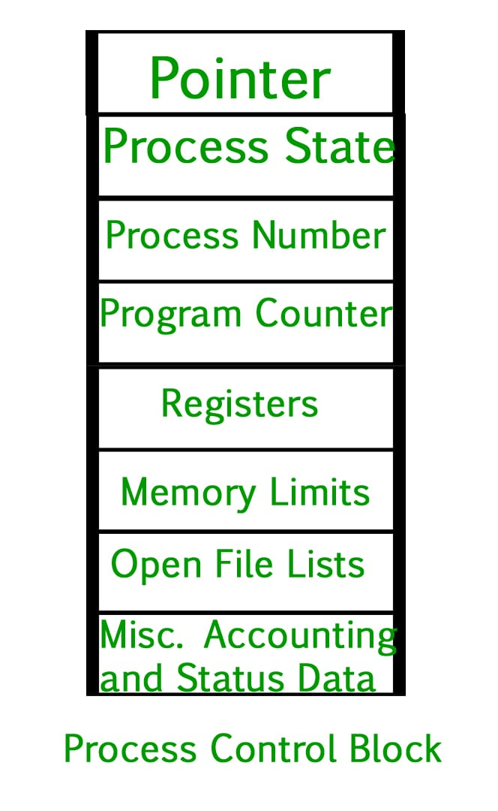
Pointer: It is a stack pointer that is required to be saved when the process is switched from one state to another to retain the current position of the process.
Process state: It stores the respective state of the process.
Process number: Every process is assigned a unique id known as process ID or PID which stores the process identifier.
Program counter: It stores the counter,: which contains the address of the next instruction that is to be executed for the process.
Register: These are the CPU registers which include the accumulator, base, registers, and general-purpose registers.
Memory limits: This field contains the information about memory management system used by the operating system. This may include page tables, segment tables, etc.
Open files list : This information includes the list of files opened for a process.
CPU SCHEDULAR :-
CPU Schedular in the operating system is a method by which one process is allowed to use CPU while the other processes are kept on hold or are kept in the waiting state . Whenever the CPU becomes idle, the operating system must select one of the processes in the line ready for launch. The selection process is done by a temporary (CPU) scheduler. The Scheduler selects between memory processes ready to launch and assigns the CPU to one of them.
Types of procces / CPU scheduler :-
1. Long Term or Job Schedule -
It brings the new process to the ‘Ready State’. It controls the Degree of Multi-programming, i.e., the number of processes present in a ready state at any point in time. It is important that the long-term scheduler make a careful selection of both I/O and CPU-bound processes. I/O-bound tasks are which use much of their time in input and output operations while CPU-bound processes are which spend their time on the CPU. The job scheduler increases efficiency by maintaining a balance between the two. They operate at a high level and are typically used in batch-processing systems.
2. Short-Term or CPU Scheduler -
The STS is also known as CPU Schedular .It is responsible for selecting one process from the ready state for scheduling it on the running state. Note: Short-term scheduler only selects the process to schedule it doesn’t load the process on running. Here is when all the scheduling algorithms are used. The CPU scheduler is responsible for ensuring no starvation due to high burst time processes.

The dispatcher is responsible for loading the process selected by the Short-term scheduler on the CPU (Ready to Running State) Context switching is done by the dispatcher only. A dispatcher does the following:
*Switching context.
*Switching to user mode.
*Jumping to the proper location in the newly loaded program.
3. Medium-Term Scheduler -
It is responsible for suspending and resuming the process. It mainly does swapping (moving processes from main memory to disk and vice versa). Swapping may be necessary to improve the process mix or because a change in memory requirements has overcommitted available memory, requiring memory to be freed up. It is helpful in maintaining a perfect balance between the I/O bound and the CPU bound. It reduces the degree of multiprogramming .

Scheduling Algorithms:-
CPU Scheduling is a process that allows one process to use the CPU while another process is delayed (in standby) due to unavailability of any resources such as I / O etc, thus making full use of the CPU. The purpose of CPU Scheduling is to make the system more efficient, faster, and fairer.
Whenever the CPU becomes idle, the operating system must select one of the processes in the line ready for launch. The selection process is done by a temporary (CPU) scheduler. The Scheduler selects between memory processes ready to launch and assigns the CPU to one of them.
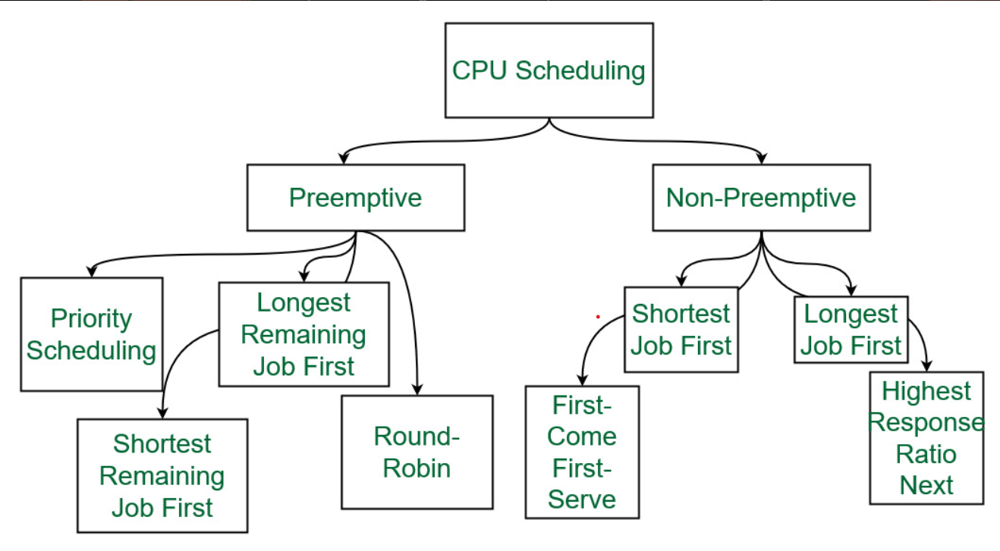
Types of Scheduling Algorithms:-
Preemtive:-Preemptive scheduling is used when a process switches from the running state to the ready state or from the waiting state to the ready state. The resources (mainly CPU cycles) are allocated to the process for a limited amount of time and then taken away, and the process is again placed back in the ready queue if that process still has CPU burst time remaining. That process stays in the ready queue till it gets its next chance to execute. Algorithms based on preemptive scheduling are Round Robin (RR), Shortest Remaining Time First (SRTF), Priority (preemptive version), etc.

Non-Preemtive:- Non-preemptive Scheduling is used when a process terminates, or a process switches from running to the waiting state. In this scheduling, once the resources (CPU cycles) are allocated to a process, the process holds the CPU till it gets terminated or reaches a waiting state. In the case of non-preemptive scheduling does not interrupt a process running CPU in the middle of the execution. Instead, it waits till the process completes its CPU burst time, and then it can allocate the CPU to another process.
Algorithms based on non-preemptive scheduling are: Shortest Job First (SJF basically non preemptive) and Priority (nonpreemptive version), etc.

Proces :-
Process in Operating System. A process is a program in execution which then forms the basis of all computation. The process is not as same as program code but a lot more than it. A process is an 'active' entity as opposed to the program which is considered to be a 'passive' entity.
Criteria of CPU Scheduling :-
- Arival Time(AT):-
The time at when the process arives in the system.
- Burst Time(BT):-
The amount of time for which process runs on CPU.
- Complition Time(CT):-
The time st which process is Completed.
- Turn Around Time
For a particular process, an important criterion is how long it takes to execute that process. The time elapsed from the time of submission of a process to the time of completion is known as the turnaround time. Turn-around time is the sum of times spent waiting to get into memory, waiting in the ready queue, executing in CPU, and waiting for I/O.
Around Time = Completion Time - Arrival Time.
- Waiting Time(WT):-
A scheduling algorithm does not affect the time required to complete the process once it starts execution. It only affects the waiting time of a process i.e. time spent by a process waiting in the ready queue.
Time = Turnaround Time - Burst Time.
Response Time:-
In an interactive system, turn-around time is not the best criterion. A process may produce some output fairly early and continue computing new results while previous results are being output to the user. Thus another criterion is the time taken from submission of the process of the request until the first response is produced. This measure is called response time.
Time = CPU Allocation Time(when the CPU was allocated for the first) - Arrival Time
Throughput:-
For a particular process, an important criterion is how long it takes to execute that process. The time elapsed from the time of submission of a process to the time of completion is known as the turnaround time. Turn-around time is the sum of times spent waiting to get into memory, waiting in the ready queue, executing in CPU, and waiting for I/O.
Turn Around Time = Completion Time - Arrival Time.
Architecture Of Opreting System:-
An Opreting System Architecture is the fundamental Design and Structure of an Opreting system. It describes how system mannage hardware, memory , procceses and Comunication. It also manage the interaction between Software and Hardware.

Deadlock:-
A deadlock is a situation where a set of processes are blocked because each process is holding a resource and waiting for another resource acquired by some other process.
Consider an example when two trains are coming toward each other on the same track and there is only one track, none of the trains can move once they are in front of each other. A similar situation occurs in operating systems when there are two or more processes that hold some resources and wait for resources held by other(s). For example, in the below diagram, Process 1 is holding Resource 1 and waiting for resource 2 which is acquired by process 2, and process 2 is waiting for resource 1.
 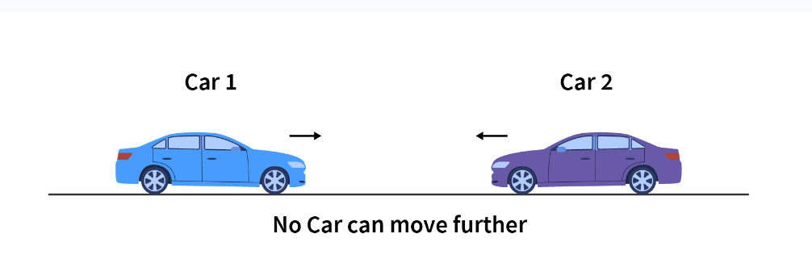
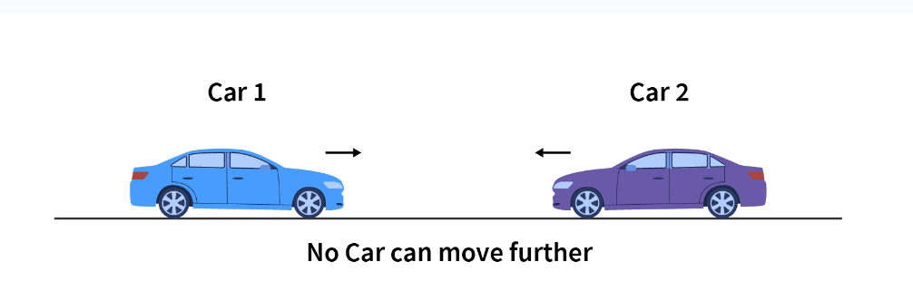
Examples Of Deadlock:-
- The system has 2 tape drives. P0 and P1 each hold one tape drive and each needs another one.
- Semaphores A and B, initialized to 1, P0, and P1 are in deadlock as follows:
- P0 executes wait(A) and preempts.
- P1 executes wait(B).
- Now P0 and P1 enter in deadlock.
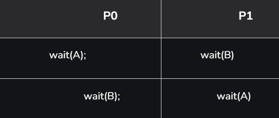
Difference between Starvation and Deadlock:-

Necessary conditions for Deadlocks:-
- Mutual Exclusion:-
A resource can only be shared in mutually exclusive manner. It implies, if two process cannot use the same resource at the same time.
Mutual section from the resource point of view is the fact that a resource can never be used by more than one process simultaneously which is fair enough but that is the main reason behind the deadlock. If a resource could have been used by more than one process at the same time then the process would have never been waiting for any resource.However, if we can be able to violate resources behaving in the mutually exclusive manner then the deadlock can be prevented.
- Hold and Wait:-
A process waits for some resources while holding another resource at the same time.
Hold and wait condition lies when a process holds a resource and waiting for some other resource to complete its task. Deadlock occurs because there can be more than one process which are holding one resource and waiting for other in the cyclic order.
However, we have to find out some mechanism by which a process either doesn't hold any resource or doesn't wait. That means, a process must be assigned all the necessary resources before the execution starts. A process must not wait for any resource once the execution has been started.
- No preemption:-
The process which once scheduled will be executed till the completion. No other process can be scheduled by the scheduler meanwhile.
Deadlock arises due to the fact that a process can't be stopped once it starts. However, if we take the resource away from the process which is causing deadlock then we can prevent deadlock.
This is not a good approach at all since if we take a resource away which is being used by the process then all the work which it has done till now can become inconsistent.
Consider a printer is being used by any process. If we take the printer away from that process and assign it to some other process then all the data which has been printed can become inconsistent and ineffective and also the fact that the process can't start printing again from where it has left which causes performance inefficiency.
- Circular Wait:-
All the processes must be waiting for the resources in a cyclic manner so that the last process is waiting for the resource which is being held by the first process.
To violate circular wait, we can assign a priority number to each of the resource. A process can't request for a lesser priority resource. This ensures that not a single process can request a resource which is being utilized by some other process and no cycle will be formed.
Strategies for handling Deadlock:-
- Deadlock Ignorance:-
Deadlock Ignorance is the most widely used approach among all the mechanism. This is being used by many operating systems mainly for end user uses. In this approach, the Operating system assumes that deadlock never occurs. It simply ignores deadlock. This approach is best suitable for a single end user system where User uses the system only for browsing and all other normal stuff.
There is always a tradeoff between Correctness and performance. The operating systems like Windows and Linux mainly focus upon performance. However, the performance of the system decreases if it uses deadlock handling mechanism all the time if deadlock happens 1 out of 100 times then it is completely unnecessary to use the deadlock handling mechanism all the time.
- Deadlock prevention:-
Deadlock happens only when Mutual Exclusion, hold and wait, No preemption and circular wait holds simultaneously. If it is possible to violate one of the four conditions at any time then the deadlock can never occur in the system.
The idea behind the approach is very simple that we have to fail one of the four conditions but there can be a big argument on its physical implementation in the system.
- Deadlock avoidance:-
In deadlock avoidance, the operating system checks whether the system is in safe state or in unsafe state at every step which the operating system performs. The process continues until the system is in safe state. Once the system moves to unsafe state, the OS has to backtrack one step.
In simple words, The OS reviews each allocation so that the allocation doesn't cause the deadlock in the system.
- Deadlock Detection:-
A deadlock can be detected by by a Resourse schedular as it tracks all the resoures that are allocated to different processes. after a deadlock is detected.
It can resolved by following method
- All the processes that are involved in the deadlock are terminated. This is not a good approach as all the progress made by the processes is destroyed.
Resources can be preempted from some processes and given to others till the deadlock is Resolved.
Banker's Algorithm
The Banker's Algorithm is a Resource allocation and deadlock avoidance algorithm that tests. for safety by stimulating the allocation for predetermined maximum possible amounts of all resources, then makes an "s- state" check to test for possible activities, before deciding
whether the allocation should allowed to Continue.
1. Active:= Running U Blocked;
for k=1…r
New_ request[k]:= Requested_ resources[requesting_ process, k];
2. Simulated_ allocation:= Allocated_ resources;
for k=1…..r //Compute projected allocation state
Simulated_ allocation [requesting _process, k]:= Simulated_ allocation [requesting _process, k] + New_ request[k];
3. feasible:= true;
for k=1….r // Check whether projected allocation state is feasible
if Total_ resources[k]< Simulated_ total_ alloc [k] then feasible:= false;
4. if feasible= true
then // Check whether projected allocation state is a safe allocation state
while set Active contains a process P1 such that
For all k, Total _resources[k] – Simulated_ total_ alloc[k]>= Max_ need [l ,k]-Simulated_ allocation[l, k]
Delete Pl from Active;
for k=1…..r
Simulated_ total_ alloc[k]:= Simulated_ total_ alloc[k]- Simulated_ allocation[l, k];
5. If set Active is empty
then // Projected allocation state is a safe allocation state
for k=1….r // Delete the request from pending requests
Requested_ resources[requesting_ process, k]:=0;
for k=1….r // Grant the request
Allocated_ resources[requesting_ process, k]:= Allocated_ resources[requesting_ process, k] + New_ request[k];
Total_ alloc[k]:= Total_ alloc[k] + New_ request[k];
Memory Management:-
Main memory refers to a that is the internal memory to the computer. The word main is used to distinguish it from external mass storage devices such as disk drives Main memory is also known as RAM. The computer is able to change only data that is in main memory Therefore every program we execute and every. file we access must be copied from a storage device into main memory.
All the programs are loaded in the main mem- ory for execution. Sometimes complete program is loaded into the memory, but sometimes a certain part or routine of the program is loaded into the main memory only when it is called. by the program, this mechanism is called Dynamic loading, this enhance the performance.
Memory Management Techniques:-
The memory management techniques can be classified into following main categories:-
- Contiguous memory management schemes
- Non-Contiguous memory management schemes

Contiguous memory management:-
Contiguous memory allocation is a memory allocation strategy. As the name implies, we utilize this technique to assign contiguous blocks of memory to each task. Thus, whenever a process asks to access the main memory, we allocate a continuous segment from the empty region to the process based on its size. In this technique, memory is allotted in a continuous way to the processes.
Contiguous Memory Management has two types:-
- Fixed Partitioning =>The main memory is divided into several fixed-sized partitions in a fixed partition memory management scheme or static partitioning. These partitions can be of the same size or different sizes. Each partition can hold a single process. The number of partitions determines the degree of multiprogramming, i.e., the maximum number of processes in memory. These partitions are made at the time of system generation and remain fixed after that.
Advantages of Fixed Partitioning memory management schemes:
- Simple to implement.
- Easy to manage and design.
Disadvantages of Fixed Partitioning memory management schemes:
- This scheme suffers from internal fragmentation.
- The number of partitions is specified at the time of system generation.
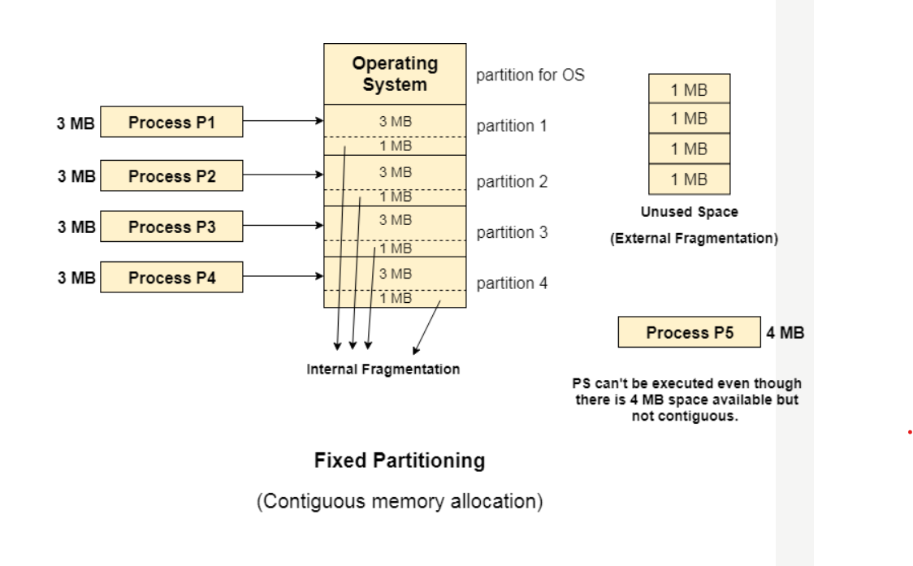
Internal fragmentation is found in fixed partition scheme. To overcome the problem of internal fragmentation, instead of fixed partition scheme, variable partition scheme is used.
- Internal Fragmentation:-
Internal Fragmentation is a problem that occurs due to poor memory allocation and it results in wastage of memory. When a process is loaded into the system it requests memory which is essential for its working. The operating system allocates memory to processes to work with but if the memory happens to be smaller and bigger than the process requirement the extra space goes unused. This small amount of memory unutilization is the major Internal Fragmentation appearing in the Operating System.
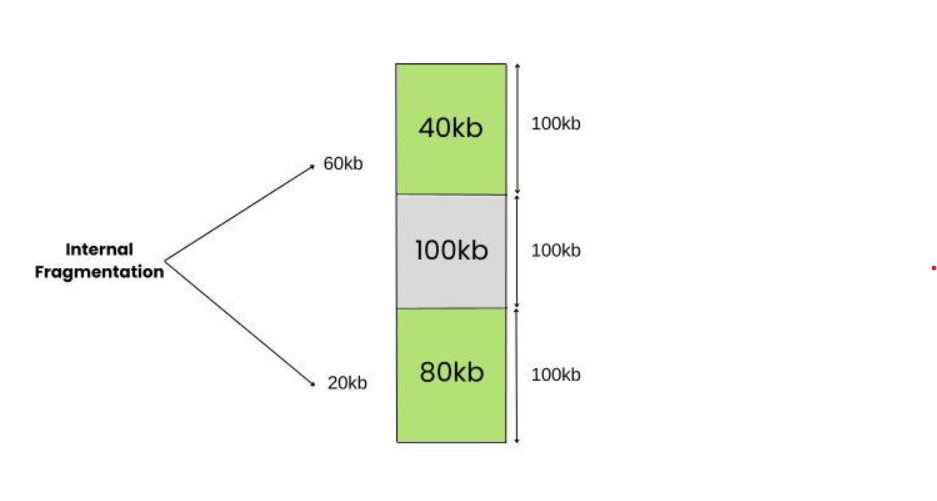
- External Fragmentation:-
External fragmentation refers to the phenomenon where memory becomes separated into little blocks of free space dispersed all through the framework, making it challenging to distribute bigger adjacent blocks of memory to processes. This division of memory happens because of the allocation and deallocation of processes after some time.
- Dynamic Partitioning =>The dynamic partitioning was designed to overcome the problems of a fixed partitioning scheme. In a dynamic partitioning scheme, each process occupies only as much memory as they require when loaded for processing. Requested processes are allocated memory until the entire physical memory is exhausted or the remaining space is insufficient to hold the requesting process. In this scheme the partitions used are of variable size, and the number of partitions is not defined at the system generation time.
Advantages of Dynamic Partitioning memory management schemes:
- Simple to implement.
- Easy to manage and design.
Disadvantages of Dynamic Partitioning memory management schemes:
- This scheme also suffers from internal fragmentation.
- The number of partitions is specified at the time of system segmentation.

Non-Contiguous memory management schemes:-
In a Non-Contiguous memory management scheme, the program is divided into different blocks and loaded at different portions of the memory that need not necessarily be adjacent to one another. This scheme can be classified depending upon the size of blocks and whether the blocks reside in the main memory or not.
- Paging =>
Paging is a technique that eliminates the requirements of contiguous allocation of main memory. In this, the main memory is divided into fixed-size blocks of physical memory called frames. The size of a frame should be kept the same as that of a page to maximize the main memory and avoid external fragmentation.
In Operating Systems, Paging is a storage mechanism used to retrieve processes from the secondary storage into the main memory in the form of pages.
The main idea behind the paging is to divide each process in the form of pages. The main memory will also be divided in the form of frames.
One page of the process is to be stored in one of the frames of the memory. The pages can be stored at the different locations of the memory but the priority is always to find the contiguous frames or holes.
Pages of the process are brought into the main memory only when they are required otherwise they reside in the secondary storage.
Advantages of paging:-
- Pages reduce external fragmentation.
- Simple to implement.
- Memory efficient.
- Due to the equal size of frames, swapping becomes very easy.
- It is used for faster access of data.

- Segmentation =>
Segmentation is a technique that eliminates the requirements of contiguous allocation of main memory. In this, the main memory is divided into variable-size blocks of physical memory called segments. It is based on the way the programmer follows to structure their programs. With segmented memory allocation, each job is divided into several segments of different sizes, one for each module. Functions, subroutines, stack, array, etc., are examples of such modules.
Compaction:-
We got to know that the dynamic partitioning suffers from external fragmentation. However, this can cause some serious problems.
To avoid compaction, we need to change the rule which says that the process can't be stored in the different places in the memory.
We can also use compaction to minimize the probability of external fragmentation. In compaction, all the free partitions are made contiguous and all the loaded partitions are brought together.
By applying this technique, we can store the bigger processes in the memory. The free partitions are merged which can now be allocated according to the needs of new processes. This technique is also called defragmentation.

As shown in the image above, the process P5, which could not be loaded into the memory due to the lack of contiguous space, can be loaded now in the memory since the free partitions are made contiguous.
Partition Allocation Methods in Memory Management
In Partition Allocation, when there is more than one partition freely available to accommodate a process’s request, a partition must be selected. To choose a particular partition, a partition allocation method is needed. A partition allocation method is considered better if it avoids internal fragmentation.
When it is time to load a process into the main memory and if there is more than one free block of memory of sufficient size then the OS decides which free block to allocate.
There are different Placement Algorithm:-
- First Fit =In the first fit, the partition is allocated which is the first sufficient block from the top of Main Memory. It scans memory from the beginning and chooses the first available block that is large enough. Thus it allocates the first hole that is large enough.
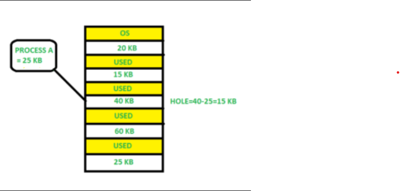
- Best Fit =Best Fit Allocate the process to the partition which is the first smallest sufficient partition among the free available partition. It searches the entire list of holes to find the smallest hole whose size is greater than or equal to the size of the process.

- Worst Fit =Worst Fit Allocate the process to the partition which is the largest sufficient among the freely available partitions available in the main memory. It is opposite to the best-fit algorithm. It searches the entire list of holes to find the largest hole and allocate it to process.

Logical Address:-
A logical address, also known as a virtual address, is an address generated by the CPU during program execution. It is the address seen by the process and is relative to the program’s address space. The process accesses memory using logical addresses, which are translated by the operating system into physical addresses. An address that is created by the CPU while a program is running is known as a logical address. Because the logical address is virtual—that is, it doesn’t exist physically—it is also referred to as such. The CPU uses this address as a reference to go to the actual memory location. All logical addresses created from a program’s perspective are referred to as being in the “logical address space”. This address is used as a reference to access the physical memory location by CPU. The term Logical Address Space is used for the set of all logical addresses generated by a program’s perspective.
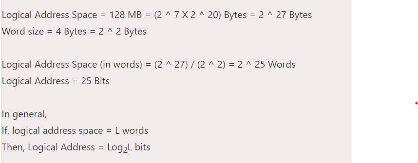
Physical Address:-
A physical address is the actual address in the main memory where data is stored. It is a location in physical memory, as opposed to a virtual address. Physical addresses are used by the Memory Management Unit (MMU) to translate logical addresses into physical addresses. The user must use the corresponding logical address to go to the physical address rather than directly accessing the physical address. For a computer program to function, physical memory space is required. Therefore, the logical address and physical address need to be mapped before the program is run.
The term “physical address” describes the precise position of necessary data in a memory. Before they are used, the MMU must map the logical address to the physical address. This is because the user program creates the logical address and believes that the program is operating in this logical address. However, the program requires physical memory to execute. All physical addresses that match the logical addresses in a logical address space are collectively referred to as the “physical address space”.
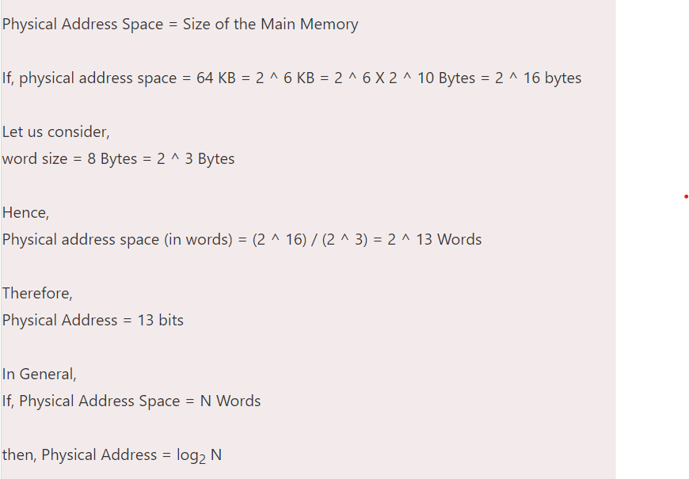
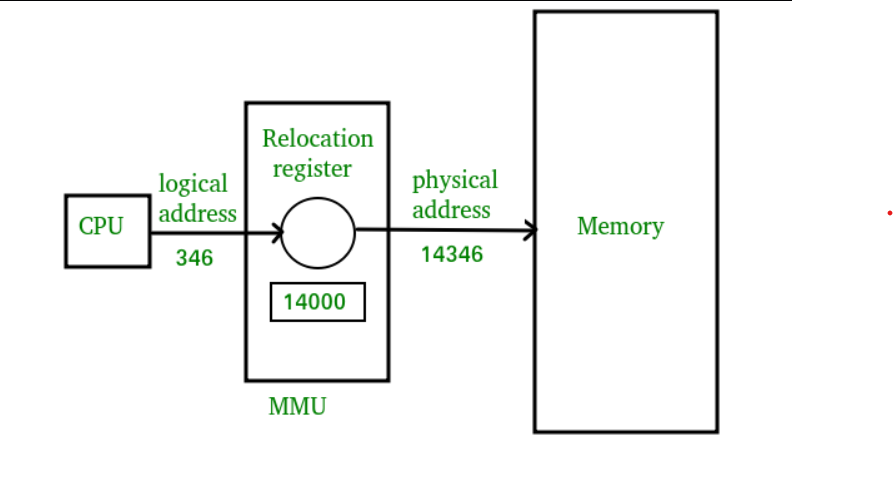
Previous Year Paper